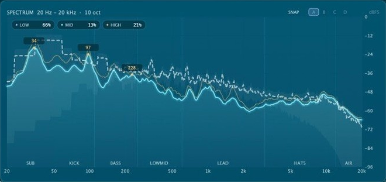

GUIDE
A free spectrum analyser that shows its settings
The spectrum is the most-used view in a mix session and the easiest to misread. LudensScope exposes FFT size, window, smoothing, tilt and waterfall history instead of hiding them behind one curve.

FFT size: resolution against speed
The FFT splits the signal into frequency bins. At 48 kHz, 2048 points give roughly 23 Hz per bin and react quickly; 16384 points give roughly 3 Hz per bin and resolve individual low notes and harmonics, at the price of time resolution — the display answers more slowly.
Low frequencies almost always look smeared on a small FFT: at 40 Hz, one 23 Hz bin already spans more than half an octave. A practical default is 8192 for a broad view and 16384 when you work on the low end or hunt a resonance.
Window functions
The FFT assumes the signal repeats forever; a window tapers the edges to reduce leakage. Hann is the general-purpose choice. Blackman-Harris has lower sidelobes, so a quiet resonance next to a loud tone stays visible. Flat-top is amplitude-accurate and best when you need to read a level rather than a shape.
Smoothing and tilt
A raw FFT curve is spiky. 1/3-octave smoothing gives the familiar mix view, 1/6 keeps more detail, 1/1 shows broad tonal balance. Tilt compensates for music carrying far less energy per octave in the top end: +3 dB/oct or +4.5 dB/oct makes a balanced mix look roughly flat instead of falling away towards 20 kHz.
Both are PRO controls. The free edition draws the same data with a fixed smoothing and a flat tilt, which is the honest default for judging balance.
Waterfall
The waterfall stacks spectra over time, so decays become visible: a snare tail, a room resonance, a cymbal that rings too long. LudensScope keeps 3, 7 or 14 seconds of history with adjustable height. FREEZE stops the spectrum and the waterfall only — loudness, true peak, scopes and channel meters keep updating, so you can hold a moment and still watch the levels.
Reading a mix on a spectrum
- A build-up around 200–400 Hz usually reads as mud before you hear it as mud.
- A wide shelf rising from 2–5 kHz is often where harshness lives on distorted guitars and cymbals.
- 60–120 Hz is where kick and bass fight; a single narrow peak that does not move with the arrangement is usually a resonance, not the mix.
- A curve that falls smoothly towards 20 kHz is normal. A curve that falls off a cliff means something above it is missing.
Peak markers and the note grid make this concrete: the loudest bin is marked, and the grid shows which musical note a peak corresponds to.
What is free and what is PRO
| Feature | Lite | PRO |
|---|---|---|
| Spectrum and waterfall | Yes | Yes |
| Peak markers, FREEZE, PNG export | Yes | Yes |
| Smoothing, tilt, FFT overlap | — | Yes |
| Target curves, CSV export | — | Yes |
| Snapshot slots A–D | — | Yes |
| Reference curve with p10–p90 band | — | Yes |
Lite is free — one installer, no account, no telemetry. PRO unlocks the reference workflow, gain staging and all seven palettes for €19.